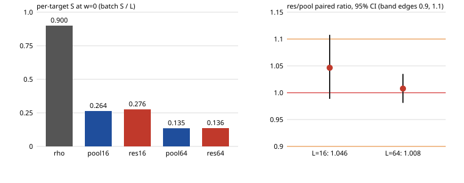

Protocol PROTOCOL.md frozen before data (Amendments 1-2: two code fixes before any valid data; the void attempts are kept in aborted-attempt1/, aborted-attempt2/). 320 / 320 records verified; ecbench verify --replay 12: audit OK, 12 replays reproduced, 0 problems. Local L0 (counts deterministic); an L2 replay is owed before any benchmarks row.
ic.residual_batch is rho.multitarget_pooled (same companions, walker, table and charging) plus one public base point P0 of unknown log in every relation, the residual collector's B = 1 column; log P0 was solved on the first target of every record and checked.

| batch L | res / pool (all three weights) | 95% interval | rule |
|---|---|---|---|
| 16 | 1.0465 | [0.9886, 1.1078] | fails (upper edge above 1.1) |
| 64 | 1.0077 | [0.9811, 1.0350] | holds |
The extra unknown costs about one extra collision per batch: 4.7% at L = 16, 0.8% at L = 64. At L = 64 the index-calculus structure is at parity with multi-target rho; at L = 16 its interval reaches past the frozen 1.1 edge, so parity is not established there.
| arm | L | S w=0 | per target | S w=0.1 | per target | S w=1 | per target | single rho / per target (w=0) |
|---|---|---|---|---|---|---|---|---|
| rho | 1 | 0.900 | 0.900 | 0.990 | 0.990 | 1.799 | 1.799 | 1.00x |
| pool16 | 16 | 4.220 | 0.264 | 4.641 | 0.290 | 8.430 | 0.527 | 3.41x |
| res16 | 16 | 4.416 | 0.276 | 4.857 | 0.304 | 8.822 | 0.551 | 3.26x |
| pool64 | 64 | 8.654 | 0.135 | 9.516 | 0.149 | 17.277 | 0.270 | 6.66x |
| res64 | 64 | 8.720 | 0.136 | 9.589 | 0.150 | 17.410 | 0.272 | 6.61x |
Per target, both batch methods are 3.3-3.4x (L = 16) and 6.6-6.7x (L = 64) cheaper than single-target rho at every weight. This is the multi-target regime: the matched reference for a batch is multi-target rho, against which the index-calculus structure is at parity (L = 64), not ahead. Single-target index calculus remains 1.6x rho (earlier studies).
Scripts: scripts/analyse.sh; derived files in analysis/; raw records in the artifact store.